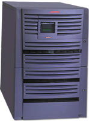

|
Computer
Facilities and Operations : Updates
DLSU
replaces its AlphaServer
by
Nick Bonao
DLSU
is now the first ever University in the Philippines to purchase
a super Compaq AlphaServer
ES40 computer system. This replaced our current
AlphaServer 2100 system.
Hopefully, this will provide quality service to our customers
in terms of maintaining and ensuring the reliability, availability
of DLSU's computing equipment and facilities, and will speed
up the response time during online enrollment processes/activity.
CFO
purchases a Firewall Security System for the University's
network
by
Nick Bonao
Since
the Internet has begun evolving from an academic to a public
world-wide computer network, utilized by many organizations,
companies and individuals, and on which modern society is
becoming increasingly more dependent, there have been many
security issues, some of them exposing weaknesses in the
security model of the Internet.
Security
is now a core business requirement, considering the economic
impact of computer crimes. Hacking and intrusions damage
can vary widely, such as potential losses from lost transactions
or data, and an erosion of customer confidence to the organization
or company.
One
of the first and biggest problems concerning the evolution
of computing is the improvement of applied Internet Security
Technology. With increasing speed and complexity of
technology and software development, the number of security
issues as well as their severity and impact on the Internet
community is tending to grow drastically, and so are the
security incidents caused by the growing number of intruders
that are actively exploiting weaknesses in current security
models, and by intrusion software becoming more sophisticated.
In
order to develop a defense strategy against future threats
in our organization, we have to take into account continuous
improvement of our security infrastructure, and it needs
to include acquiring, and building of Firewall Security
System as the primary and an effective counter measure
against this potential threat.
Transfer
of Internet connections from Piltel/Smart Phils. to Liberty
Telecomms
by
Nick Bonao
DLSU
has transferred to Liberty Telecomms which gives a much
reasonable cost per month. This transfer saved DLSU almost
PhP28,000.00 a month. In addition to this, the availability
and reliability of its network connections (wireless connections)
are ensured.
|